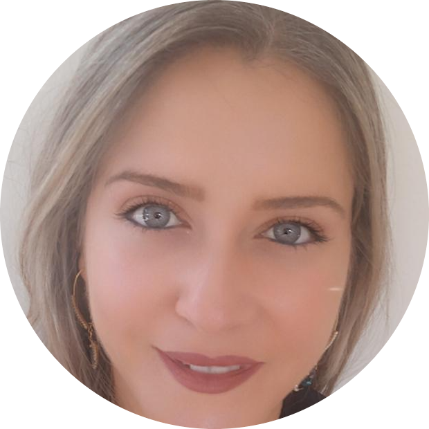

|  |
Manal NajemTeacher. I am a teacher at School Of Salvatorian sisters. I teach Chemistry, Biology and Science for Complementary and Secondary Classes. I have 6 years of experience in Teaching at School, and 2 years of distance Learning while Covid Situation. I love Travelling and preparing delicious Food. |
| Dates | Work |
|---|---|
| 2007-2014 | Hostess At MAYA AGENCY |
| 2012 | Determination of mineral salts in mineral water for labeling and quality testing for milk at Lebanese Agronomic Research Institute (LARI) |
| 2014-2015 | Data Entry and distribution for Syrian refugees with International RED CROSS under the project of UNDP |
| 2014-2015 | Sampling, cell culture, cell counting, testing and writing scientific reports at Agro Food and Development Center & Labs (AFDL) |
| 2015 | Teacher and coordinator of Chemistry and Biology (Complementary and Secondary) |
| Photography ⭐⭐⭐⭐⭐ | Paint ⭐⭐⭐⭐ |
| Dance ⭐⭐⭐ | Cook ⭐ |